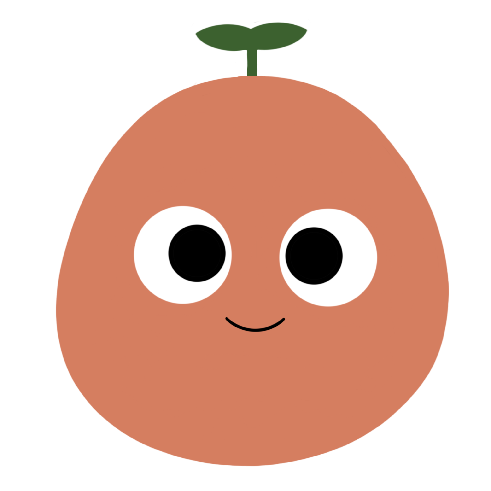
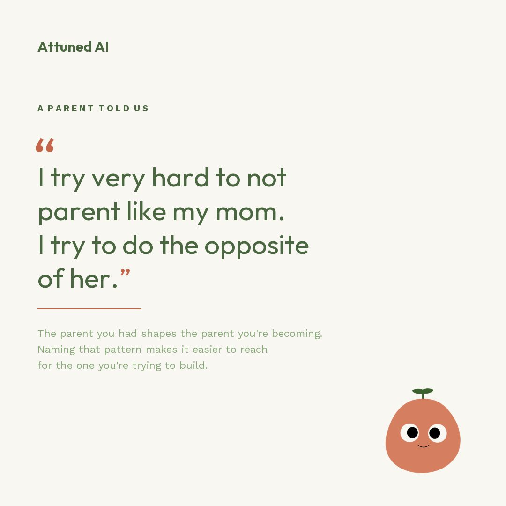
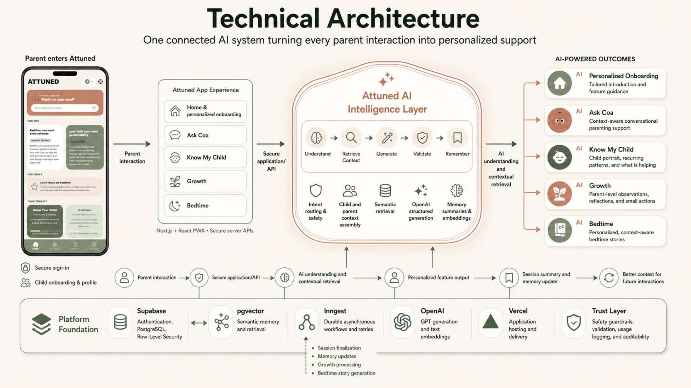
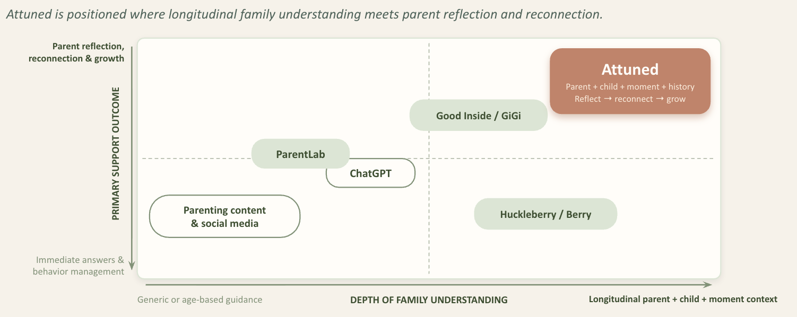
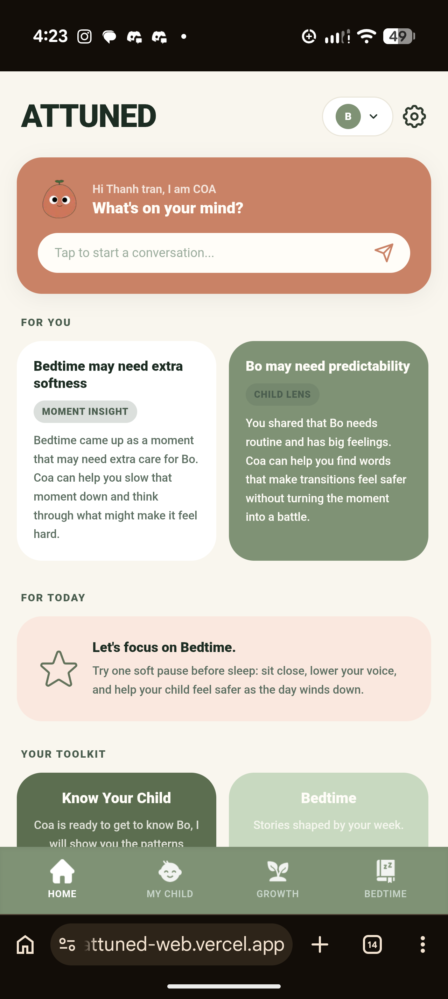
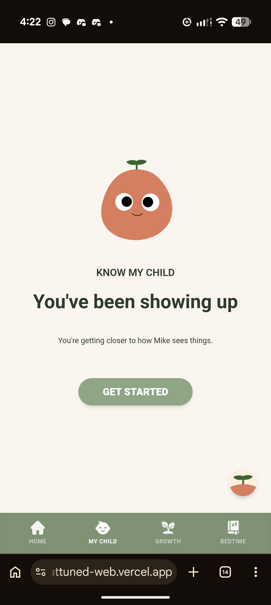
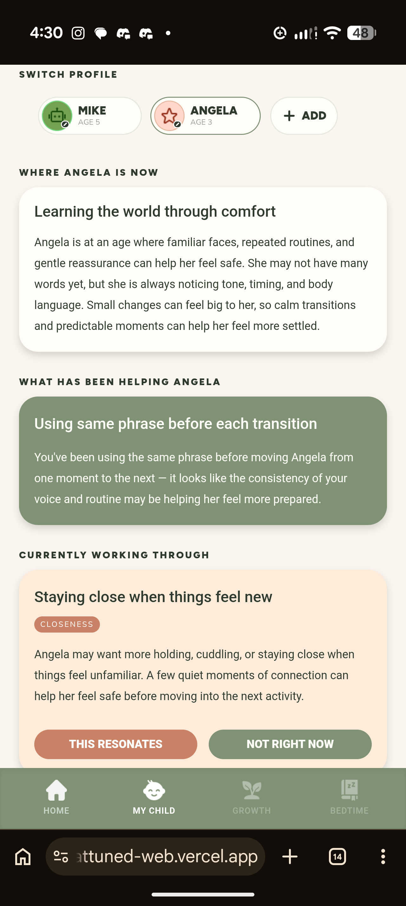
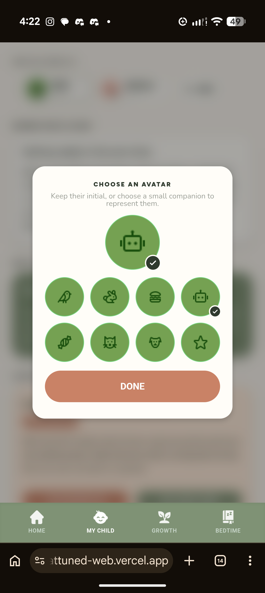

Attuned
Hard parenting moments, gently understood. Attuned is an AI companion for parents, built for the moment right after a hard parenting moment, when parents need support to reconnect with their child.

Overview
Attuned is built on a single insight from parent research: parents don't lack knowledge about how to respond to their child. They lose access to it when they're flooded with stress. The product is built to regulate the parent first, because a regulated parent is the one who can actually help their child.
The product spans four core experiences. I joined as the AI PM for Know My Child, the feature that builds a living, evolving portrait of a child across every Coa conversation, getting more specific over time rather than staying generic. I invite you to read about the product launch for Know My Child in depth below.
Real-time chatbot supporting in a hard moment
Grounded Chatbot · RAGAn evolving portrait of who your child is becoming
Agentic Memory Synthesis · RAGA reflection space for the parent
Pattern SynthesisA personalized story built from the week's patterns
Storyteller AgentProduct strategy · AI prompt engineering · Feature spec · Engineering tickets · Design QA · Analytics · GTM copy
4 PMs leading 8 engineers, 2 data scientists, 2 UX designers
User Research
50+ in-depth interviews + survey
Parents across the US, Canada, Latin America, and India needed a real-time support to step away from hard moments with their child before they escalate.
It's not a knowledge gap. It's an access gap.
Not one parent located the problem purely in the child. Parents know what they should do, but they can't access it when flooded.
of parents hit a moment they didn't handle the way they wanted, weekly or more
say their own mood and stress makes a hard moment worse
have tried no parenting tool: book, app, podcast, or therapy

Customer Challenges
AI Hypothesis
"If the AI delivers warm, age-appropriate, framework-grounded responses with less than 15% age-stage misattribution rate to parents of children ages 2–12, they are able to recognize their own emotional triggers and respond to their child in the moment rather than react, which improves D7 session return rate, with 3+ sessions in the first 7 days predicting conversion, captured through free to paid conversion within the first 7 days."
Customer Segmentation
Customer Persona
Maya is a stay-at-home mom to her 8-year-old daughter, largely parenting on her own since her husband, an army officer, is often unavailable. She brings a deliberate, conscious approach to how she handles hard moments.
"I want to give my child a childhood that feels different from my own — without losing myself trying."
Gender: Female
Income: <$150,000 annually
Education: Bachelor's degree
Employment: Mixed: stay-at-home and working/WFH parents
Family: Parent of a child, age 8
Needs a way to stay regulated and access what she already knows, right when a hard moment hits, before it escalates.
A tool that helps her recognize her own emotional triggers and respond calmly in the moment, rather than reacting the way she was raised to.
Parenting communities, word of mouth from other customers, and parenting conferences.
Direct app-store download, starting with a free trial before subscribing.
Instant, self-serve onboarding, no setup call or sales touch needed.
Opens Coa in the moment of stress for real-time, in-the-moment support, then checks Know My Child through the week to see patterns forming.
7-day free trial, then monthly or annual subscription billed through the app store.
In-app chat and a self-serve help center, she won't call a support line.
Juggling parenting with work, whether that's a full-time job, working from home, or full-time at home. Knows what she should do but struggles to access it in the moment. Has tried apps and books but nothing stuck. Motivated by not repeating her own upbringing.
Can't access what she knows when flooded with stress. Sees her own reactions clearly but can't interrupt the pattern in the moment. Worries every hard moment shapes who her child becomes.
Customer Journey Map
Scenario: Maya is a stay-at-home mom to her 8-year-old daughter, largely parenting on her own since her husband, an army officer, is often unavailable. She brings a deliberate, conscious approach to how she handles hard moments, but often feels flooded in the moment and worries about repeating her own upbringing.
AI Model Overview
Invest in our own data and retrieval, not in fine-tuning a model. The moat is the family memory that builds up over time, not the AI model itself.
Know My Child runs as an agentic memory-synthesis workflow, an async Inngest job shared with Growth and Bedtime. When a session ends, GPT-5-nano extracts what happened and GPT-5.4 mini updates the child's living portrait, drawing on past sessions stored in pgvector. The portrait gets more specific with every session.
Purpose: pulls structured JSON of behavior, emotion, and need candidates from the parent's message. Temperature = 0.
Characteristics: Fast and cheap for data extraction. Deterministic for keeping JSON schema stable.
Purpose: generates Coa responses and the Know My Child portrait from the extracted JSON and our response framework.
Characteristics: Stronger reasoning and safety to produce framework-grounded insights through prompting. No fine-tuning needed, making the model swappable.
Purpose: converts our onboarding reference data and session summaries into vectors for semantic retrieval.
Characteristics: Small, cheap, and accurate for embedding when sessions end.
Purpose: reviews each candidate against a clinical safety rubric to catch diagnosis and unsupported causal claims.
Characteristics: Cheap for safety and guardrail evaluation. Minimal latency with a binary pass or fail.
Purpose: retrieves the closest matching context by semantic similarity, filtered by the child's age band, and pulls session history for pattern synthesis.
Characteristics: Lives inside the existing Postgres database. No separate vector store to run. Semantic search and SQL filters in one query.
gpt-5-nano handles extraction and safety judging. GPT-5.4 mini is reserved for generation, the one task that actually needs it.
Both extraction and safety judging are fast, cheap, deterministic tasks that suit a smaller model. Generation is where quality matters most, so that's the only place the more expensive model is used. Because intelligence lives in the retrieval layer, not the model, either model can be swapped for an open-source alternative (Mistral, Llama 4) at scale without rebuilding anything.
AI Proof of Concept
The AI validation proof of concept (POC) for Know My Child successfully demonstrated the accuracy and effectiveness of our AI models in synthesizing portraits and behavioral patterns from Ask Coa sessions.
We validated the extraction and generation models' ability to produce portraits with 90% or higher accuracy: appropriate to the child's age band, grounded in what the parent actually reported, and free of clinical language, delivering personalized, genuinely usable content to parents. This validation confirmed the viability of our retrieval-grounded AI approach, providing a strong foundation for future scaling and user impact.
AI Input and AI Output
Know My Child is only as good as what Ask Coa captures. Every session becomes a structured record, and those records build the updated portrait.
What each session leaves behind: a summary paragraph plus structured fields: behavior codes, emotion candidates, need candidates, escalation level, what helped, what to avoid.
The same session memory feeds Know My Child, Growth, and Bedtime.
Fires asynchronously when a session closes, but only regenerates if there's enough new signal to justify it. Otherwise the existing report stays put and we don't pay to rewrite an unchanged portrait. The three components generate in parallel, each with its own quality gates, then publish together in a single atomic transaction so a parent never sees a half-written report.
Data Pipeline
Five stages and a loop. What a parent tells Coa becomes memory, that memory becomes a portrait once there's enough new signal, and what they say about the portrait shapes the next one.
The parent either types freely about what happened, or taps one of five suggested openers like "We had a hard moment today," "I'm not sure what [Child] needs right now." The openers exist because a parent who is already overwhelmed often can't find the words to start. Free text covers everything else.
Either way we end up with the same thing: a real moment described in the parent's own words. That's the raw input to the AI pipeline.
At session end, an LLM (GPT-5.4 mini) summarizes the conversation into structured fields: behavior, emotion, and need candidates, escalation level, what helped, what to avoid. The summary is embedded via text-embedding-3-small and stored in pgvector, becoming retrievable memory.
An Inngest workflow fires when a session ends, then checks whether there's enough new signal to regenerate insights. If yes, one consolidated fetch pulls RAG-retrieved memory from the last 10 sessions and prior feedback. Three LLM components then run in parallel as isolated Inngest steps, each with its own quality gates. Regenerated outputs are published only once all three pass, otherwise the cycle retries.
The three LLM outputs are consolidated and written together in a single atomic SQL transaction, forming the three fully regenerated components of the child portrait.
The portrait of where [Child] is right now, What's been helping, and Currently working through patterns are delivered. Each pattern in Currently working through is shown with two responses: This Resonates or Not Right Now for the feedback loop.
Feedback returns through two channels. Explicit: each tap from the parent to validate which patterns are correct is stored against the specific pattern ID it answered. Implicit: when the parent returns to Ask Coa, Coa asks whether anything has changed, and that new conversation re-enters the pipeline at stage 1.
That's the part that makes the memory compound. We're not rewriting the portrait from scratch each cycle. The parent corrects it, and we carry the correction forward.
Technologies
We kept the hard thinking in the retrieval and orchestration layers, which means the models stay replaceable.
- gpt-5-nano: extraction and safety judging, which are fast, cheap, deterministic tasks
- GPT-5.4 mini: generation of portraits, patterns, and reflections
- text-embedding-3-small: embeds session summaries and reference material for retrieval
- OpenAI API: model access across the pipeline
- pgvector: semantic similarity search over parent and child memory
- Supabase Postgres: our main database, and vector search runs inside it, so there's no second datastore to maintain
- JSONB: stores generated pattern arrays as structured, queryable documents
- RAG: retrieval-grounded generation, tying every response to real session history
- Inngest: async workflow engine handling event triggers, isolated retryable steps, and parallel execution
- Event-driven triggers: synthesis fires on session completion, gated by business rules
- Atomic SQL transactions: report and unlock state commit together or not at all
- NestJS: API layer and workflow handlers
- TypeScript: end-to-end typing, plus in-code validation of model output
- REST APIs: feedback capture, session logging, and report retrieval
- Vercel: hosting and deployment for the web app
- PostHog: product analytics and event tracking, with no PII sent
System Architecture

Product Opportunities & Prioritization
Onboarding plus four features came out of the research, each aimed at a different moment. Know My Child was mine end to end.
Product Roadmap
All four features were built in parallel, so the roadmap runs by phase rather than by feature.
marks the work I owned on Know My Child
User Stories & Acceptance Criteria
Risk
Go-to-Market & Business Model
Enter through the moment. Grow through trust. Start with reflective, tech-comfortable parents, then scale through repeat use, referrals, and trusted family channels.
Tech-comfortable parents of children ages 2–12 who regularly seek parenting support online, a frequent, recurring need where existing solutions are fragmented and generic, and trust fuels referrals.
Phase 1: parenting content, creators/communities, and parent referrals. Phase 2: schools, pediatric networks, and family benefits/wellness partners.
Unlike general-purpose AI, Attuned remembers family context over time, delivers warm and practical support, and is grounded in child-development research.
First 7 days of live, in-the-moment Coa support, free, enough to feel the value. Premium unlocks unlimited Coa and the memory that compounds over time, priced to the persona's willingness to pay.
Generation dominates AI cost; retrieval and extraction are cheap. Against a $10–20 price point, gross margin is very high. Conversion metric: free → paid within 7 days.
Attuned sits in the corner where long-term family context meets parent reflection. The longer it knows a family, the more useful it gets, which is the opposite of most parenting tools, where the advice is the same on day one and day two hundred.

MVP
Know My Child was fully populated with real synthesised content across multiple child profiles.
Lock screen with progress bar and What Unlocks preview. Celebration unlock screen. All copy and interaction states built to spec.
Where [Name] Is Now portrait, 2 pattern cards with need tags, and What’s Been Helping, all rendering from real synthesised content across multiple child profiles.
This Resonates / Not Right Now flow, avatar picker, multi-profile switching, all validated against the feature spec.





AI Product Scalability
To adapt to data drift as models and data change over time, we defined a Golden Examples eval set to establish the features’ output standard, so the AI keeps delivering accurate, personalized content even as new behaviors arise.
To reduce AI bias and unsupported claims in generated content, we evaluate real outputs, iterate the prompts, and encode what we learn as permanent checks: no pathologising language, hedged phrasing for anything inferred, and needs drawn from an approved taxonomy.
To ensure AI infrastructure scalability as the number of families using Attuned grows, every insight is generated only from that family’s own session history rather than a shared pool. We also read only the last 10 sessions as compressed structured summaries, so the prompt stays a fixed size no matter how long a parent has been with us.
Want to see more of my work?
← Back to portfolio